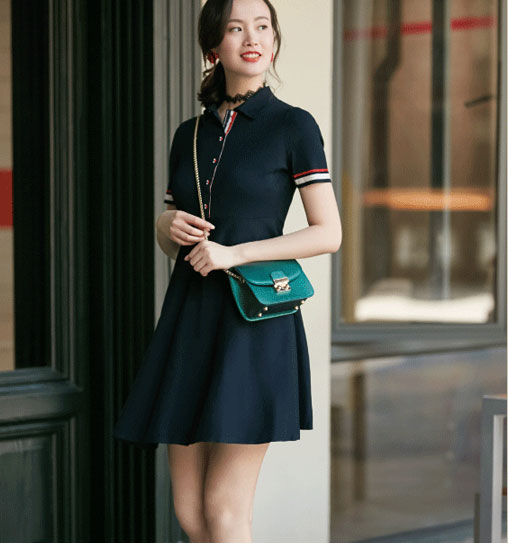
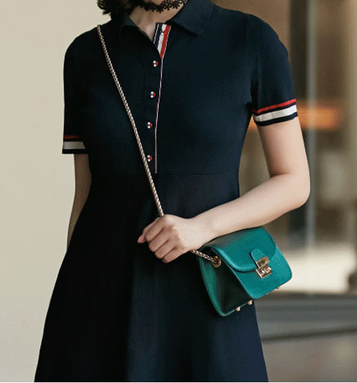
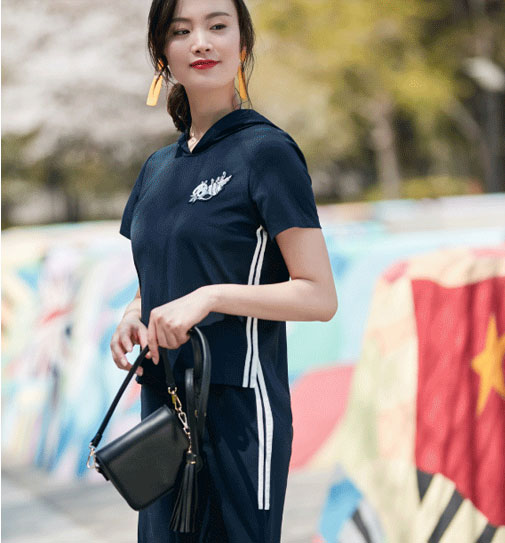

首页 : 新闻动态>时髦客不爱裙装爱裤装，她们美的不一样
新闻动态
设计师们以旧翻新的能力好比一个个粉刷匠，竟然能让曾经难以被潮流接受的POLO衫也时髦起来，就连作为延伸品的P0L0裙都炙手可热。相比POLO衫，POLO裙的优点之一就是省去了搭配的烦恼，且收腰处理之后，更修饰身形，加入红白条纹，则弱化了年龄。
条纹亦是时髦运动风不可缺失的要素之一，尤其装饰于侧边之后，得到了大批时尚人士的宠爱，竖向延伸的条纹，更容易勾勒出优美曲线，裙边的开衩，随性感为日常的休闲带去美好的心情。
裤装的运动感的确会比裙装来得直接，可相对的，穿出时髦感的难度就增加了，所以成套穿着，依旧是省力的好方法，相互呼应的条纹可以为整理造型加分，同时V领设计的海洋碎花上衣显瘦清新，不正是这夏日运动风的极佳表现嘛！